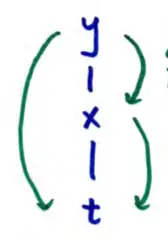

15.4 The Chain Rule
if \( y = f(x) \) and \( x = g(t) \) then the Chain Rule is used to find the rate of change of \( y \) with respect to \( t \)
\[ \frac{dy}{dt} = \frac{dy}{dx} \frac{dx}{dt} \]
how \( t \) affects \( y \)
how \( y \) is affected by its own variable \( x \)
how \( t \) affects \( x \)
a good way to track variable relationships is a tree diagram
\( \frac{dy}{dt} \)

\( \frac{dy}{dx} \)
\( \frac{dx}{dt} \)
each step down is a derivative